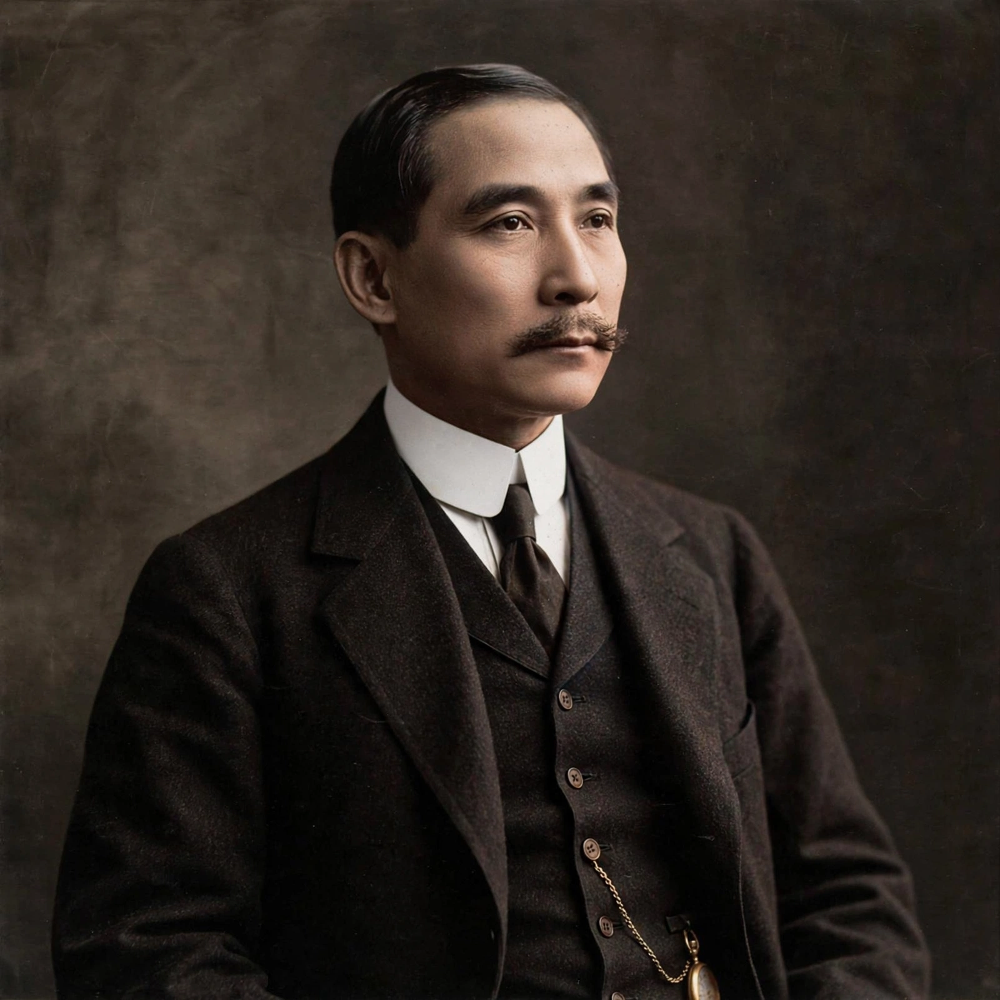

Sun Yat-sen

Born: 12 November 1866, Xiangshan, Guangdong
Died: 12 March 1925, Beijing
Office: Provisional President of the Republic of China (1912)
Known for: founder of the Kuomintang; Three Principles of the People
Sun Yat-sen (12 November 1866 – 12 March 1925) was a Chinese revolutionary, statesman and political philosopher who founded the Republic of China and the Kuomintang (Nationalist Party). Venerated on both sides of the Taiwan Strait — in the Republic of China (Taiwan) as its founding father and in the People's Republic as a pioneering revolutionary — he developed the political philosophy of the Three Principles of the People.
Early life and revolution
Born in Guangdong, Sun was educated in Hawaii and trained as a doctor in Hong Kong, where he concluded that the Qing dynasty had to be overthrown. From exile he organised the Revive China Society (1894) and later the Tongmenghui, raising funds among overseas Chinese and launching a series of failed uprisings. In October 1911 revolution broke out at Wuchang; Sun, then in the United States, returned to become provisional president of the new Republic on 1 January 1912. To secure national unity he soon yielded the presidency to Yuan Shikai, who secured the abdication of Puyi.
Later career
When Yuan turned authoritarian and then attempted to found his own dynasty, Sun resisted, and after Yuan's death he established a rival government in Guangzhou, reorganising the Kuomintang with Soviet advisers and founding the Whampoa Military Academy under Chiang Kai-shek. His Three Principles — nationalism, democracy (people's rights) and people's livelihood — were delivered as lectures in 1924 and remain the constitutional basis claimed by the Republic of China. Sun died of cancer in Beijing in 1925 while negotiating national reunification; his mausoleum at Nanjing became a national shrine.
Legacy
Sun's image, name and writings were subsequently claimed by both Nationalists and Communists. Cities, universities and streets across the Chinese-speaking world bear the name Zhongshan, from his Japanese alias.
See also: Puyi · Qing dynasty · History of China